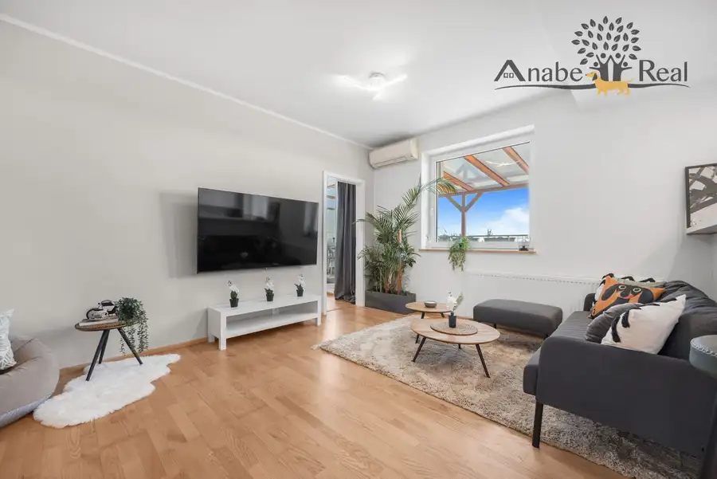
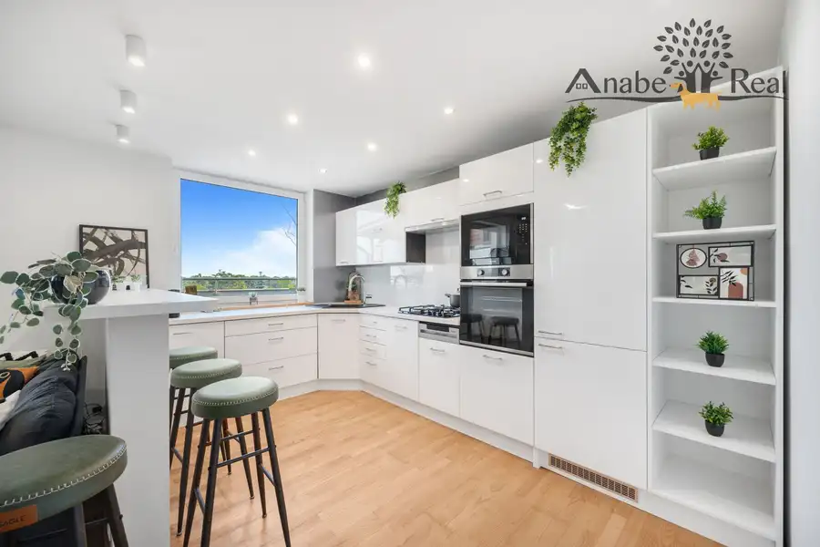
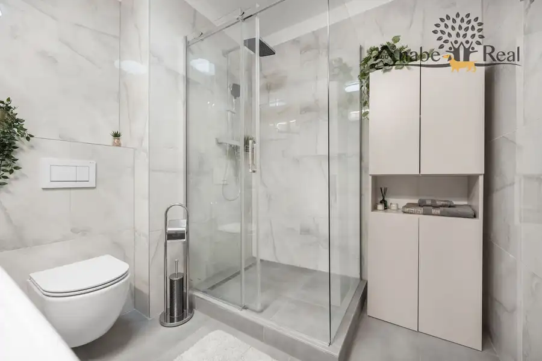
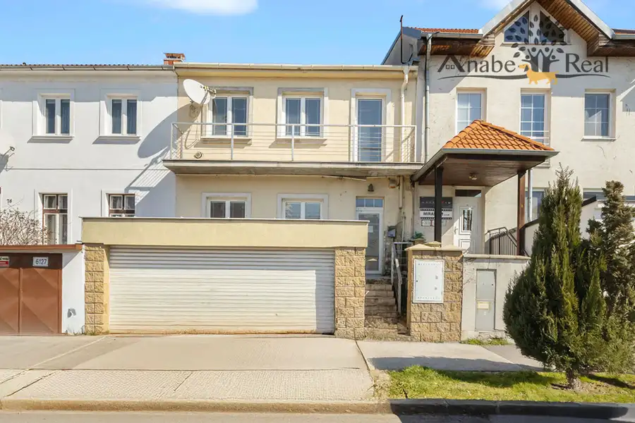
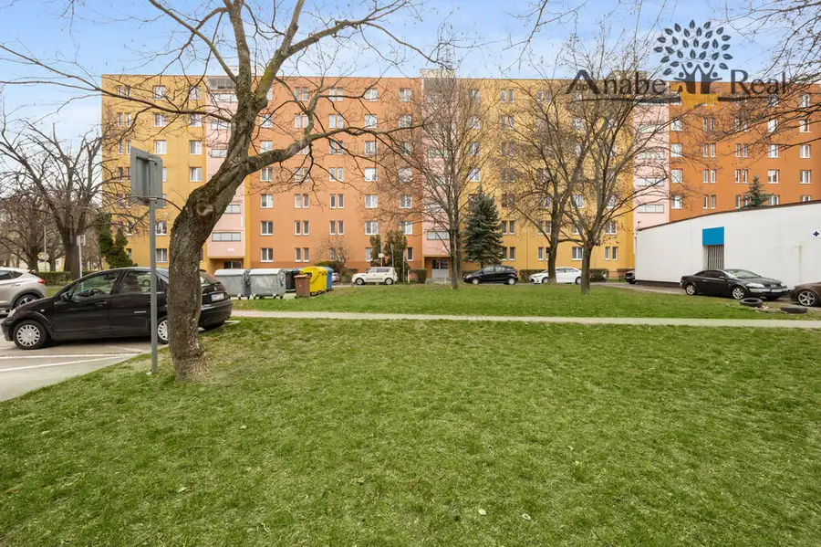
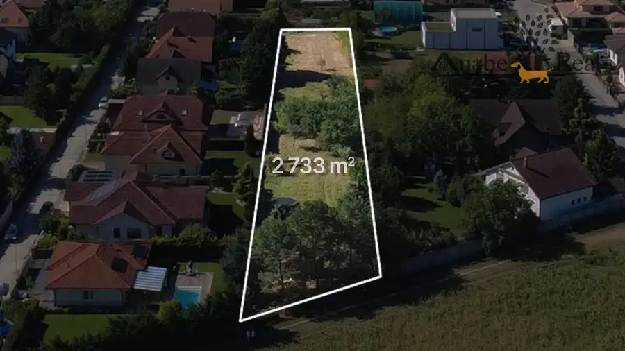

Na predaj krásny 2 izbový byt s veľkou terasou v Bratislave Ružinov, (Solitaire)
Ružinov, Bratislava



- Dispozícia2-izbový
- Plocha87 m²
- Poschodie4. z 4
- StavNovostavba
- VlastníctvoOsobné
O nehnuteľnosti
EXKLUZÍVNE ponúkame na predaj krásny 2 izbový byt v bytovom dome SOLITAIRE na 4p./ 4p. o výmere byt 57,04 m2 + pivnica 1,5 m2 + 28,81 m2 terasa na ul. Mierová v staršej novostavbe (r.2006) v Bratislave, mestská časť Ružinov, s výhľadom na záhrady a rodinné domy. Výborný štartovací byt alebo na investíciu či prenajímanie.3D virtuálna prehliadka:https://realsee.ai/2VPPRJPaByt je po rekonštrukcii: má veľkú terasu zastrešenú pergolou, obývačku spojenú s kuchynskou časťou, 1 samostatnú nepriechodnú izbu, priestrannú predsieň, kúpeľňu (sprchový kút) s wc, špajzu, pivnicu a krásnu priestrannú terasu so zeleňou a s krbom na grilovanie. Kuchynská linka má zabudované spotrebiče: el. rúra, plyn. varná doska, digestor, umývačka riadu, chladnička s mrazničkou a mikrovlnná rúra. V celom byte je laminátová podlaha, okrem kúpeľne s wc, kde je keramická dlažba. Byt má plastové okná a dvere (na terasu), rolldoor, 2x klimatizáciu, bezbečnostné dvere, vlastný plyn. kotol.Byt je kúpou voľný.Nízke mesačné zálohové platby na 1 osobu: 54,46 eur/správca + energie (28 eur elektrina + 25 eur plyn)Bytový dom má 4 poschodia, je z tehly, má výťah, bránu na čip. Výhodou domu je, že parkovisko pred domom je súkromné vo vlastníctve vlastníkov bytov a nebytových priestorov ako spoluvlastnícky podiel na pozemku. Parkovanie nie je vyhradené. Okolie: dobrá občianska vybavenosť, v blízkosti potraviny, reštaurácie, zastávky MHD, rýchla dostupnosť do mesta a cez obchvat von z mesta, parkovanie pred domom, v okolí sa nachádza Lesopark Vrakuňa s detským ihriskom, cyklochodník popri Malom Dunaji.Cena: 259.900,- €, v cene sú zahrnuté aj služby RK:- komplexný právny servis - vypracovanie všetkých typov zmlúv- komplexný finančný servis – vybavenie hypotekárnych úverov a poistení nehnuteľností- poplatky spojené s notárskym overovaním podpisov na kúpnych zmluvách- správny poplatok pri prevode vlastníckeho práva vo výške 100,-Eur na Okresnom úrade, katastrálnom odbore za kúpne zmluvy Kontakt:Tomáš Janek, 0903 73 85 99, tomas.janek9@gmail.com,Mgr. Anetta Vlčáková, RSc. 0905 83 33 44, anetta.vlcakova@gmail.com.
Parametre
- Cellar area
- 1.5 m²
- Cena vrátane energií
- Nie
- Druh
- 2 izbový byt
- Dátum zverejnenia
- 01. 10. 2026
- Energetický certifikát budovy
- nie je
- Plocha terasy v m2
- 28.81 m²
- Podlažie
- 4
- Počet nadzemných podlaží
- 4
- Rok kolaudácie
- 2006
- Rok výstavby
- 2004
- Stav nehnuteľnosti
- Novostavba
- Typ
- Predaj
- Typ konštrukcie
- Tehlová
- Umiestnenie
- Posledné podlažie
- Vlastníctvo
- Osobné
- Vybavenie
- Vonkajšie parkovacie miesto, Špajza, Výťah
- Vykurovanie
- Lokálne, Klimatizacia
- Zariadenie
- Čiastočne zariadené
- Úžitková plocha
- 87 m²
Kde to je


Mohlo by Vás zaujímať

DomNové 449 000 €Na predaj rodinný dom ul. Pri Suchom mlyne Bratislava-Staré Mesto Staré Mesto, Bratislava 241 m²
BytNové 220 000 €Súrne hľadáme pre konkrétnych klientov – 2 izbový byt v Bratislave – Ružinov. Ružinov, Bratislava 2-izbový45 m²
PozemokNové Cena na vyžádáníNa predaj investičný stavebný pozemok na výstavbu rodinných domov v obci Zálesie okres Senec Zálesie 2733 m²